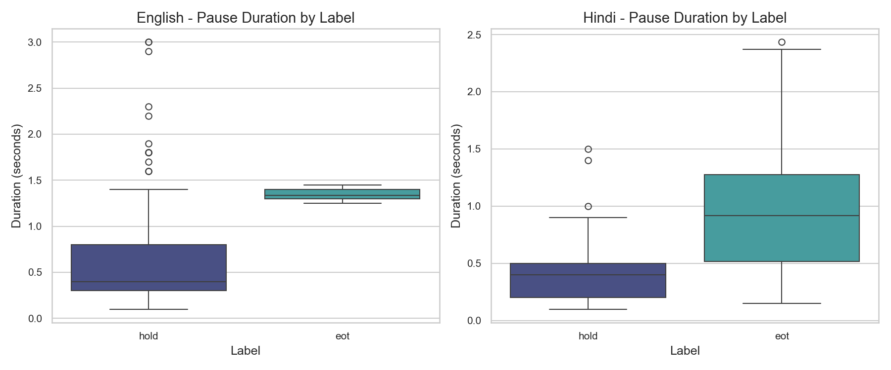
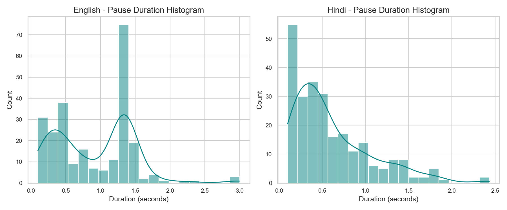
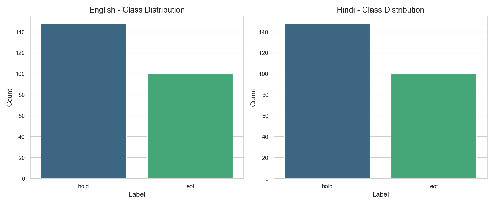
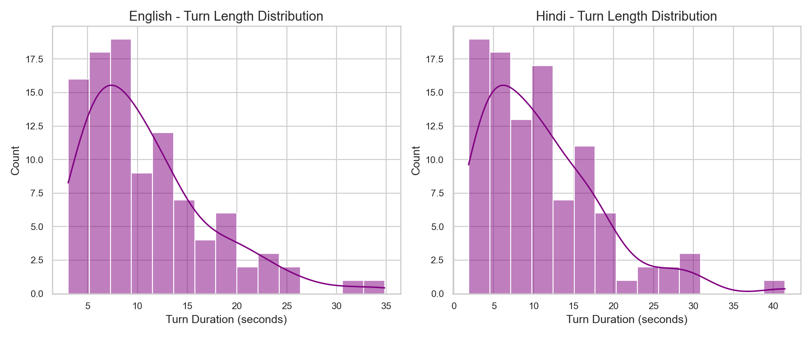

A Senior ML & Speech Engineer's Solution for Voice Agent Floor Control Optimization
In conversational AI, detecting the End-of-Turn (EoT) accurately is crucial. An agent that speaks too early interrupts the user (false cutoff), while speaking too late results in awkward silence delays.
The objective of this assignment is to build a robust model strictly obeying the Causality Constraint (using only audio history up to the pause start) to predict p_eot at each pause. We optimize for the lowest possible Mean Response Delay at a strict threshold of ≤ 5% interrupted turns.
Our hybrid feature-engineered machine learning pipeline (StandardScaler + RBF SVC) achieved significant latency reductions compared to the naive silence-only baseline:
| Dataset | Metric | Baseline (Silence-Only) | Our Model (SVC) | Improvement |
|---|---|---|---|---|
| English | Mean Delay | 1600 ms | 370 ms | -1230 ms (77%) |
| English | Cutoff Rate | 0.0% | 4.0% | Within 5% budget |
| Hindi | Mean Delay | 850 ms | 252 ms | -598 ms (70%) |
| Hindi | Cutoff Rate | 5.0% | 5.0% | Within 5% budget |
We designed a highly informative, causally constrained 126-feature set to represent speech dynamics preceding the pause:

Pause Durations by Label

Pause Duration Histograms

Dataset Class Balance

Turn Lengths Distribution
Pipeline:
StandardScaler → Support Vector Classifier (RBF)
Hyperparameters:
C=1.0, kernel='rbf', balanced class weights.
Training Style:
Joint Cross-Lingual training (combining English + Hindi) to increase robustness.
Done by Coding Agent (Antigravity):
Done by Human: